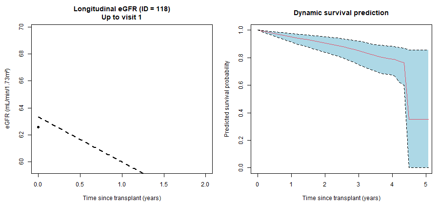

By the end of this lecture, you should be able to:
Understand why joint models are needed when time-dependent covariates are internal
Distinguish between extended Cox models and joint models
Describe the two components of a joint model:
a longitudinal submodel (e.g. eGFR over time)
a time-to-event submodel (e.g. graft failure)
Explain how the longitudinal process is linked to the survival process
Interpret key parameters from a joint model
Recognise situations where joint models provide less biased and more realistic inference
2 Why Do We Need Joint Models?
In the extended Cox model, we allowed covariates to change over time. However, this approach relies on a key assumption:
The time-varying covariate is external
Its evolution is not influenced by the underlying event process
This assumption is often unrealistic in medical and public health studies.
The Problem of Internal Time-Dependent Covariates
A time-dependent covariate is internal if:
It is affected by the same disease process that leads to the event
It both predicts the event and is influenced by the event process
A common example in transplantation studies is eGFR:
Declining eGFR increases the risk of graft failure
At the same time, eGFR declines because the graft is failing
Warning
When a time-dependent covariate is internal,
the extended Cox model may produce biased estimates.
3 Why the Extended Cox Model Is Not Enough
In the extended Cox model:
The longitudinal process (e.g. eGFR) is treated as error-free
Measurement error in repeated biomarker values is ignored
The feedback between the biomarker and the event is not modelled
As a result:
The estimated effect of the biomarker may be biased
Standard errors may be underestimated
Interpretation can be misleading
🫘 Graft function declines
⬇️
🧪 More clinical tests
⬇️
🧫 Lower eGFR measurements
⬇️
⚠️ Patient appears riskier
⬇️
📈 Effect is exaggerated
4 Joint Models
Joint models address these limitations by:
Modelling the longitudinal trajectory (e.g. eGFR over time)
Modelling the time-to-event outcome (e.g. graft failure)
Explicitly linking the two processes
This allows us to:
Account for measurement error in the biomarker
Handle internal time-dependent covariates
Obtain more realistic estimates of risk
5 Visual demonestraion of longitudinal process (eGFR) and survival process (time to graft lost)
Figure 1: Individual and average eGFR trajectories after kidney transplantation
The left panel shows individual longitudinal eGFR trajectories for a subset of transplant recipients, illustrating substantial between-patient heterogeneity in both baseline kidney function and the rate of decline over time. Some patients experience relatively stable eGFR, while others show rapid deterioration, highlighting that kidney function evolves differently across individuals.
The right panel displays the average eGFR trajectory by donor type. On average, recipients of living-donor kidneys start with higher eGFR and maintain better kidney function over follow-up compared with recipients of deceased-donor kidneys. However, both groups show a general declining trend over time.
Show R code
library(ggplot2)library(dplyr)library(gridExtra)dat_long<-read.csv("egfr_joint_data.CSV")# sample 25 patients for visual clarityset.seed(20251113)ids_sample <-sample(unique(dat_long$id), 25)p_traj <- dat_long %>%filter(id %in% ids_sample) %>%ggplot(aes(x = time, y = egfr, group = id, colour =factor(id))) +geom_line(size =1.2, alpha =0.85) +geom_point(size =2.2, alpha =0.9) +scale_colour_discrete(guide ="none") +labs(x ="Time since transplant (years)",y ="eGFR (mL/min/1.73m²)",title ="Individual eGFR Trajectories (only for 25 ids)" ) +theme_minimal(base_size =10) +theme(plot.title =element_text(face ="bold", size =8),axis.title =element_text(face ="bold") )p_traj_by_donor <- dat_long %>%group_by(donor_type, time) %>%summarise(mean_egfr =mean(egfr), .groups ="drop") %>%ggplot(aes(x = time, y = mean_egfr,colour =factor(donor_type),group = donor_type)) +geom_line(size =1.8) +geom_point(size =3) +scale_colour_manual(values =c("0"="#0072B2", # deceased = blue"1"="#D55E00"), # living = redlabels =c("0"="Deceased donor","1"="Living donor") ) +labs(x ="Time since transplant (years)",y ="Mean eGFR",colour ="Donor type",title ="Mean eGFR Trajectory by Donor Type" ) +theme_minimal(base_size =8) +theme(plot.title =element_text(face ="bold", size =8),axis.title =element_text(face ="bold") )# Arrange side by sidegrid.arrange( p_traj, p_traj_by_donor,ncol =2)
Figure 2: Kaplan–Meier curves for time to graft failure
The left panel shows the overall Kaplan–Meier curve for time to graft failure, summarising graft survival for all transplant recipients combined. The stepwise nature of the curve reflects the occurrence of graft failure events over follow-up, while the shaded area represents the 95% confidence interval.
The right panel presents Kaplan–Meier curves stratified by donor type. A clear separation between the curves is observed over time, indicating differences in graft survival between groups. Recipients of living-donor kidneys consistently show higher graft survival probabilities compared with recipients of deceased-donor kidneys throughout follow-up.
Importantly, these plots illustrate that eGFR is a time-varying, patient-specific process that is closely linked to graft failure risk. Treating eGFR as a fixed baseline covariate or updating it naively in an extended Cox model may be inappropriate, as changes in eGFR can be driven by the underlying disease process itself. This motivates the use of joint models, which explicitly model the longitudinal eGFR process together with the time-to-event outcome.
Note
Joint models provide a unified framework for analysing longitudinal measurements and time-to-event outcomes together.
They allow eGFR to be an internal time-varying covariate
They account for correlations between eGFR and risk of graft failure
They handle varying measurement times
They reduce bias caused by feedback loops
They improve prediction of graft loss
6 Joint Model Specification (Linear Mixed Model + Cox Model)
Here, we focus on a joint model combining a linear mixed-effects model and a Cox proportional hazards model.
More generally, the joint modelling framework is highly flexible and can be extended to:
a wide range of longitudinal models, including linear and non-linear mixed models, and
different types of survival models, including parametric and semi-parametric models.
The key idea is that the longitudinal and survival processes are modelled simultaneously and linked through shared subject-specific components.
treats the biomarker as a latent process\(m_i(t)\) rather than a noisy observed value \(y_i(t)\)
accounts for measurement error
correctly handles internal time-dependent covariates whose evolution is linked to event risk
7 Example
This example demonstrates how to fit a joint model combining a linear mixed-effects model and a Cox proportional hazards model using the dataset we have been working with so far.
Model components
Outcome: Time to graft failure
Exposure: Donor type (living vs deceased)
Covariates:
Donor age
Recipient gender
Longitudinal eGFR measurements
Show R code
library(dplyr)library(survival)library(lme4)library(JMbayes2)#-- data in long formatdat_long<-read.csv("egfr_joint_data.CSV")#--longitudinal modellme_fit <-lme( egfr ~ time + donor_type + recip_male + donor_age_c,random =~ time | id,data = dat_long,na.action = na.omit,control =lmeControl(opt ="optim"))#summary(lme_fit)#---cox model#data for the cox model (wide format)dat_surv<-read.csv("egfr_joint_baseline.csv")cox_fit <-coxph(Surv(time, status) ~ donor_type + recip_male + donor_age_c,data = dat_surv,x =TRUE)#summary(cox_fit)#--joint modeljm_fit <-jm( cox_fit, lme_fit,time_var ="time"# this is the time variable in dat_long)summary(jm_fit)
Call:
jm(Surv_object = cox_fit, Mixed_objects = lme_fit, time_var = "time")
Data Descriptives:
Number of Groups: 300 Number of events: 33 (11%)
Number of Observations:
egfr: 1685
DIC WAIC LPML
marginal 11496.76 11435.38 -5721.705
conditional 14218.91 14048.51 -7243.756
Random-effects covariance matrix:
StdDev Corr
(Intr) 9.1332 (Intr)
time 1.6643 0.1604
Survival Outcome:
Mean StDev 2.5% 97.5% P Rhat
donor_type -1.3961 0.6510 -2.8133 -0.2391 0.0102 1.0502
recip_male 0.8670 0.3975 0.1230 1.6640 0.0204 1.0041
donor_age_c 0.4566 0.1711 0.1099 0.7875 0.0073 1.0088
value(egfr) -0.0025 0.0153 -0.0319 0.0270 0.8662 1.0039
Longitudinal Outcome: egfr (family = gaussian, link = identity)
Mean StDev 2.5% 97.5% P Rhat
(Intercept) 56.6120 1.0341 54.6252 58.6449 0e+00 1.0023
time -2.4174 0.1551 -2.7217 -2.1117 0e+00 1.0246
donor_type 4.0256 1.1316 1.7748 6.2110 7e-04 1.0007
recip_male -3.8387 1.1179 -6.0347 -1.6406 7e-04 1.0003
donor_age_c -2.3460 0.4633 -3.2580 -1.4518 0e+00 1.0007
sigma 4.7351 0.0950 4.5469 4.9236 0e+00 1.0031
MCMC summary:
chains: 3
iterations per chain: 3500
burn-in per chain: 500
thinning: 1
time: 24 sec
Interpretation
Longitudinal Submodel: eGFR Trajectory
The longitudinal component models the underlying eGFR trajectory over time using a linear mixed-effects model.
✅ Baseline eGFR (Intercept)
The estimated baseline eGFR is approximately 56.6 mL/min/1.73m² (95% CrI: 54.6–58.6), representing the average kidney function at transplant for a reference patient (deceased donor, female, donor age 50).
✅ Time effect
The coefficient for time is −2.42, indicating that eGFR declines by about 2.4 mL/min/1.73m² per year on average.
This confirms a progressive deterioration of kidney function over follow-up.
✅ Donor type
Recipients of kidneys from living donors start with 4.0 mL/min, higher eGFR levels over time compared with deceased-donor recipients, and maintain better function over time. after adjusting for other factors.
✅ Recipient gender (male)
Male recipients have, on average, lower eGFR trajectories by 3.84 units than females over follow-up.
✅ Donor age
Higher donor age is associated with lower longitudinal eGFR, suggesting poorer graft function when kidneys are obtained from older donors. For each 10 years older donor (relative to age 50), eGFR is ~2.4 units lower.
✅ Random effects
There is substantial between-patient variability in both baseline eGFR and the rate of change over time, justifying the use of a mixed-effects model.
Survival Submodel: Time to Graft Failure
The survival component models the hazard of graft failure, linking it to the latent eGFR process from the longitudinal model.
✅ Association with eGFR (value effect)
The coefficient for the current underlying eGFR is negative, indicating that lower true eGFR values are associated with a higher risk of graft failure.
In other words, patients with declining kidney function face an increased instantaneous hazard of graft loss. But effect is small (0.0025) and not significant.
✅ Donor type
Holding the underlying eGFR trajectory and other covariates constant, recipients of a living-donor kidney have approximately a 75% lower instantaneous hazard of graft failure compared with recipients of a deceased-donor kidney \(HR = \exp(-1.396) \approx 0.25\).
✅ Recipient gender (male)
Male recipients exhibit a 2.38-times higher hazard of graft failure compared with females after adjusting for kidney function and other covariates.
✅ Donor age
After adjusting for kidney function and other covariates, each 10-year increase in donor age above 50 years is associated with an approximately 58% higher hazard of graft failure.
Overall - In this joint model, eGFR declines over time and is strongly influenced by donor type, donor age, and recipient sex.
The association between current eGFR and graft failure hazard is negative—as expected—but small and not strongly supported by the data.
Random effects reveal substantial between-patient heterogeneity in baseline eGFR and rate of decline.
8 Prediction plots
Figure A presents predicted trajectories for four randomly selected patient IDs, illustrating subject-specific model predictions.
Observed eGFR values (black points)
Fitted eGFR trajectory from the longitudinal mixed model (blue line)
95% posterior credible interval for the predicted trajectory (light blue shading)
Show R code
library(dplyr)library(ggplot2)library(JMbayes2)# pick 4 ids as examplesset.seed(123)ids_example <-sample(unique(dat_long$id), 4)# restrict to those patientsdat_long_sub <- dat_long %>%filter(id %in% ids_example) %>%mutate(status =0L) # get subject-specific fitted eGFR at the observed timespred_long <-predict( jm_fit,newdata = dat_long_sub,process ="longitudinal",type ="subject_specific",type_pred ="response",control =list(return_newdata =TRUE))ggplot(pred_long, aes(x = time)) +geom_point(aes(y = egfr, colour ="Observed"), alpha =0.7) +geom_line(aes(y = pred_egfr, colour ="Fitted"), linewidth =1) +geom_ribbon(aes(ymin = low_egfr, ymax = upp_egfr, fill ="95% CI"),alpha =0.15, colour =NA) +facet_wrap(~ id, ncol =2) +scale_colour_manual(values =c("Observed"="black","Fitted"="#1f78b4")) +scale_fill_manual(values =c("95% CI"="#1f78b4")) +labs(x ="Time since transplant (years)",y ="eGFR (mL/min/1.73m²)",colour ="",fill ="",title ="Observed vs fitted eGFR trajectories for ID= 14, 118, 179, 195" ) +theme_minimal(base_size =13) +theme(legend.position ="bottom")
Figure B shows Dynamic joint-model predictions for a randomly selected transplant recipient. The left panel shows the observed longitudinal eGFR measurements (solid points and lines) together with the subject-specific fitted trajectory from the linear mixed model (dashed line). The right panel displays the corresponding dynamic predicted graft survival probability, updated sequentially as new eGFR measurements become available. Shaded areas represent 95% credible intervals.
Show R code
library(nlme)library(survival)library(JM)library(animation)# datadat_long <-read.csv("egfr_joint_data.csv") # long data with repeated eGFRdat_surv <-read.csv("egfr_joint_baseline.csv") # wide / baseline survival data#Make sure factors are factors (important for JM)dat_long$donor_type <-factor(dat_long$donor_type)dat_surv$donor_type <-factor(dat_surv$donor_type, levels =levels(dat_long$donor_type))# Fit longitudinal model (LME)lmeFit <-lme( egfr ~ time + donor_type + recip_male + donor_age_c,random =~ time | id,data = dat_long,na.action = na.omit,control =lmeControl(opt ="optim"))#Fit survival model (Cox) survFit <-coxph(Surv(time, status) ~ donor_type + recip_male + donor_age_c,data = dat_surv,x =TRUE)#Fit joint model (JM) ## method options include: "weibull-PH-aGH", "piecewise-PH-aGH", etc.jointFit <-jointModel( lmeFit, survFit,timeVar ="time",method ="piecewise-PH-aGH")#Choose a patient IDset.seed(1)id_show <-sample(unique(dat_long$id), 1) #randomly select an IDid_show<-118# i selected the ID =118dataP <- dat_long[dat_long$id ==14, ]dataP <- dataP[order(dataP$time), ]len_id <-nrow(dataP)## A helper time grid for plotting survival curvestmax <-max(dat_surv$time, na.rm =TRUE)saveGIF({for (i in1:len_id) {## longitudinal history up to visit i newdat_i <- dataP[1:i, ]## dynamic survival prediction conditional on history up to i sfit_i <-survfitJM(jointFit, newdata = newdat_i)## ---- two-panel layoutpar(mfrow =c(1, 2), mar =c(4.5, 4.5, 3.5, 1))#Panel A: longitudinal dataplot(x = newdat_i$time,y = newdat_i$egfr,pch =16,xlim =range(dataP$time, na.rm =TRUE),ylim =range(dataP$egfr, na.rm =TRUE),xlab ="Time since transplant (years)",ylab ="eGFR (mL/min/1.73m²)",main =paste0("Longitudinal eGFR (ID = ", id_show, ")\nUp to visit ", i) )lines(newdat_i$time, newdat_i$egfr, lwd =2)#(Optional) add subject-specific fitted mean from the LME tt <-seq(min(dataP$time), max(dataP$time), length.out =100) pred_df <-data.frame(id = id_show,time = tt,donor_type = newdat_i$donor_type[1],recip_male = newdat_i$recip_male[1],donor_age_c = newdat_i$donor_age_c[1] ) yhat <-predict(lmeFit, newdata = pred_df, level =1) # subject-specificlines(tt, yhat, lwd =2, lty =2)#Panel B: survival predictionplot( sfit_i,estimator ="mean",conf.int =0.95,fill.area =TRUE,col.area ="lightblue",include.y =FALSE,xlim =c(0, tmax),xlab ="Time since transplant (years)",ylab ="Predicted survival probability",main ="Dynamic survival prediction" ) }}, ani.width =900, ani.height =420)
[1] TRUE
Show R code
#for showing the gif file in the output no need to run #dir.create("images", showWarnings = FALSE)#file.rename("animation.gif", "images/animation.gif")

Source Code
---title: "Lecture 4: Joint model"toc: truetoc-depth: 3---```{r, echo=FALSE}knitr::opts_chunk$set( message = FALSE, warning = FALSE)```## Learning Objectives::: callout-noteBy the end of this lecture, you should be able to:- Understand **why joint models are needed** when time-dependent covariates are **internal** - Distinguish between **extended Cox models** and **joint models** - Describe the two components of a **joint model**: - a **longitudinal submodel** (e.g. eGFR over time) - a **time-to-event submodel** (e.g. graft failure)- Explain how the **longitudinal process is linked to the survival process** - Interpret key parameters from a **joint model**- Recognise situations where joint models provide **less biased and more realistic inference**:::## Why Do We Need Joint Models?In the **extended Cox model**, we allowed covariates to change over time.However, this approach relies on a key assumption:- The time-varying covariate is **external**- Its evolution is **not influenced by the underlying event process**This assumption is often unrealistic in medical and public health studies.::: callout-note### The Problem of Internal Time-Dependent CovariatesA **time-dependent covariate is internal** if:- It is affected by the same disease process that leads to the event- It both **predicts** the event and is **influenced by** the event processA common example in transplantation studies is **eGFR**:- Declining eGFR increases the risk of graft failure- At the same time, eGFR declines **because the graft is failing**:::::: {.callout-warning}When a time-dependent covariate is internal, the extended Cox model may produce **biased estimates**.:::---## Why the Extended Cox Model Is Not EnoughIn the extended Cox model:- The longitudinal process (e.g. eGFR) is treated as **error-free**- Measurement error in repeated biomarker values is ignored- The feedback between the biomarker and the event is not modelledAs a result:- The estimated effect of the biomarker may be biased- Standard errors may be underestimated- Interpretation can be misleading🫘 **Graft function declines** ⬇️ 🧪 **More clinical tests** ⬇️ 🧫 **Lower eGFR measurements** ⬇️ ⚠️ **Patient appears riskier** ⬇️ 📈 **Effect is exaggerated**---## Joint Models**Joint models** address these limitations by:- Modelling the **longitudinal trajectory** (e.g. eGFR over time)- Modelling the **time-to-event outcome** (e.g. graft failure)- Explicitly **linking the two processes**This allows us to:- Account for **measurement error** in the biomarker- Handle **internal time-dependent covariates**- Obtain more realistic estimates of risk## Visual demonestraion of longitudinal process (eGFR) and survival process (time to graft lost)**Figure 1: Individual and average eGFR trajectories after kidney transplantation**The left panel shows **individual longitudinal eGFR trajectories** for a subset of transplant recipients, illustrating substantial **between-patient heterogeneity** in both baseline kidney function and the rate of decline over time. Some patients experience relatively stable eGFR, while others show rapid deterioration, highlighting that kidney function evolves differently across individuals.The right panel displays the **average eGFR trajectory by donor type**. On average, recipients of **living-donor kidneys** start with higher eGFR and maintain better kidney function over follow-up compared with recipients of **deceased-donor kidneys**. However, both groups show a general **declining trend over time**.```{r, warning=FALSE}library(ggplot2)library(dplyr)library(gridExtra)dat_long<-read.csv("egfr_joint_data.CSV")# sample 25 patients for visual clarityset.seed(20251113)ids_sample <- sample(unique(dat_long$id), 25)p_traj <- dat_long %>% filter(id %in% ids_sample) %>% ggplot(aes(x = time, y = egfr, group = id, colour = factor(id))) + geom_line(size = 1.2, alpha = 0.85) + geom_point(size = 2.2, alpha = 0.9) + scale_colour_discrete(guide = "none") + labs( x = "Time since transplant (years)", y = "eGFR (mL/min/1.73m²)", title = "Individual eGFR Trajectories (only for 25 ids)" ) + theme_minimal(base_size = 10) + theme( plot.title = element_text(face = "bold", size = 8), axis.title = element_text(face = "bold") )p_traj_by_donor <- dat_long %>% group_by(donor_type, time) %>% summarise(mean_egfr = mean(egfr), .groups = "drop") %>% ggplot(aes(x = time, y = mean_egfr, colour = factor(donor_type), group = donor_type)) + geom_line(size = 1.8) + geom_point(size = 3) + scale_colour_manual( values = c("0" = "#0072B2", # deceased = blue "1" = "#D55E00"), # living = red labels = c("0" = "Deceased donor", "1" = "Living donor") ) + labs( x = "Time since transplant (years)", y = "Mean eGFR", colour = "Donor type", title = "Mean eGFR Trajectory by Donor Type" ) + theme_minimal(base_size = 8) + theme( plot.title = element_text(face = "bold", size = 8), axis.title = element_text(face = "bold") )# Arrange side by sidegrid.arrange( p_traj, p_traj_by_donor, ncol = 2)```**Figure 2: Kaplan–Meier curves for time to graft failure**The **left panel** shows the **overall Kaplan–Meier curve** for time to graft failure, summarising graft survival for all transplant recipients combined. The stepwise nature of the curve reflects the occurrence of graft failure events over follow-up, while the shaded area represents the **95% confidence interval**.The **right panel** presents **Kaplan–Meier curves stratified by donor type**. A clear separation between the curves is observed over time, indicating differences in graft survival between groups. Recipients of **living-donor kidneys** consistently show **higher graft survival probabilities** compared with recipients of **deceased-donor kidneys** throughout follow-up.```{r, warning=FALSE}library(survival)library(broom)dat_baseline<-read.csv("egfr_wide_data.CSV")# overall KMsurv_obj <- Surv(time = dat_baseline$time, event = dat_baseline$status)fit_km <- survfit(surv_obj ~ 1)km_df <- data.frame( time = fit_km$time, surv = fit_km$surv, lower = fit_km$lower, upper = fit_km$upper)KM1<-ggplot(km_df, aes(x = time, y = surv)) + geom_step(linewidth = 1.2, colour = "#365abd") + geom_ribbon(aes(ymin = lower, ymax = upper), alpha = 0.2, fill = "#365abd") + labs( title = "Kaplan–Meier Curve for Time to Graft Failure", x = "Time since transplant (years)", y = "Graft survival probability" ) + coord_cartesian(ylim = c(0, 1)) + theme_grey(base_size = 8) + theme( plot.title = element_text(face = "bold", size = 8), panel.grid.minor = element_blank() )#KM curve by donor typefit_km_donor <- survfit(Surv(time, status) ~ donor_type, data = dat_baseline)km_df <- tidy(fit_km_donor)p_km <- km_df %>% mutate( donor_type = factor(strata, labels = c("Deceased donor", "Living donor")) ) %>% ggplot(aes(x = time, y = estimate, colour = donor_type, fill = donor_type)) + geom_step(size = 1.2) + geom_ribbon(aes(ymin = conf.low, ymax = conf.high), alpha = 0.20, colour = NA) + scale_colour_manual( values = c("Deceased donor" = "#0072B2", "Living donor" = "#D55E00") ) + scale_fill_manual( values = c("Deceased donor" = "#0072B2", "Living donor" = "#D55E00") ) + labs( x = "Time since transplant (years)", y = "Graft survival probability", colour = "Donor type", fill = "Donor type", title = "Kaplan–Meier Curves by Donor Type" ) + theme_minimal(base_size = 8) + theme( plot.title = element_text(face = "bold", size = 8), axis.title = element_text(face = "bold") )# Arrange side by sidegrid.arrange( KM1, p_km, ncol = 2)```Importantly, these plots illustrate that **eGFR is a time-varying, patient-specific process** that is closely linked to graft failure risk. Treating eGFR as a fixed baseline covariate or updating it naively in an extended Cox model may be inappropriate, as changes in eGFR can be driven by the underlying disease process itself. This motivates the use of **joint models**, which explicitly model the longitudinal eGFR process together with the time-to-event outcome.::: {.callout-note}Joint models provide a unified framework for analysing **longitudinal measurements** and **time-to-event outcomes** together.- They allow eGFR to be an internal time-varying covariate - They account for correlations between eGFR and risk of graft failure - They handle varying measurement times - They reduce bias caused by feedback loops - They improve prediction of graft loss :::## Joint Model Specification (Linear Mixed Model + Cox Model)Here, we focus on a **joint model combining a linear mixed-effects model and a Cox proportional hazards model**. More generally, the joint modelling framework is highly flexible and can be extended to:- a wide range of **longitudinal models**, including **linear and non-linear mixed models**, and - different types of **survival models**, including **parametric** and **semi-parametric** models.The key idea is that the longitudinal and survival processes are modelled **simultaneously** and linked through shared subject-specific components.---### Longitudinal Submodel (Linear Mixed Effects Model)Let $y_i(t)$ be the observed biomarker value (e.g. eGFR) for individual $i$ at time $t$.We model:$$y_i(t) = m_i(t) + \varepsilon_i(t),\qquad \varepsilon_i(t) \sim N(0, \sigma^2)$$where $m_i(t)$ is the **true underlying (latent) biomarker trajectory**.A common linear mixed model specification is:$$m_i(t) = \beta_0 + \beta_1 t + \beta_2^\top X_i + b_{0i} + b_{1i} t$$- $\beta_0, \beta_1, \beta_2$ are **fixed effects**- $X_i$ are baseline covariates (e.g. donor type, age, sex)- $b_{0i}, b_{1i}$ are **random effects** (subject-specific deviation)Assume the random effects follow:$$\begin{pmatrix}b_{0i}\\b_{1i}\end{pmatrix}\sim N\left(\begin{pmatrix}0\\0\end{pmatrix},D\right)$$---### Survival Submodel (Cox Proportional Hazards Model)Let $T_i$ be the event time and $h_i(t)$ the hazard for individual $i$ at time $t$.The Cox-type survival model is:$$h_i(t \mid \mathcal{M}_i(t), Z_i) = h_0(t)\exp\left(\gamma^\top Z_i + \alpha\, f\{m_i(t)\}\right)$$- $h_0(t)$ is the **baseline hazard**- $Z_i$ are baseline covariates (can overlap with $X_i$)- $m_i(t)$ is the **latent true biomarker value** from the longitudinal model- $\alpha$ quantifies the **association** between the biomarker process and event risk- $f\{\cdot\}$ defines how the longitudinal process enters the hazard---### The Link Between the Two Processes (Association Structures)The most common choice is the **current value association**:$$h_i(t) = h_0(t)\exp\left(\gamma^\top Z_i + \alpha\, m_i(t)\right)$$**Interpretation of $\alpha$**: For a 1-unit higher **true underlying biomarker value** at time $t$, the hazard changes by:$$HR(t) = \exp(\alpha)$$---### Alternative links **(a) Current value + slope association**$$h_i(t) = h_0(t)\exp\left(\gamma^\top Z_i + \alpha_1 m_i(t) + \alpha_2 m_i'(t)\right)$$where $m_i'(t)$ is the **instantaneous rate of change** (slope).**(b) Cumulative (history) association**$$h_i(t) = h_0(t)\exp\left(\gamma^\top Z_i + \alpha \int_0^t m_i(s)\,ds\right)$$---::: {.callout-note}### Why this helpsUnlike the extended Cox model, the joint model:- treats the biomarker as a **latent process** $m_i(t)$ rather than a noisy observed value $y_i(t)$- accounts for **measurement error**- correctly handles **internal time-dependent covariates** whose evolution is linked to event risk:::## Example This example demonstrates how to fit a **joint model combining a linear mixed-effects model and a Cox proportional hazards model** using the dataset we have been working with so far.**Model components**- **Outcome:** Time to graft failure - **Exposure:** Donor type (living vs deceased) - **Covariates:** - Donor age - Recipient gender - Longitudinal eGFR measurements ```{r, warning=FALSE}library(dplyr)library(survival)library(lme4)library(JMbayes2)#-- data in long formatdat_long<-read.csv("egfr_joint_data.CSV")#--longitudinal modellme_fit <- lme( egfr ~ time + donor_type + recip_male + donor_age_c, random = ~ time | id, data = dat_long, na.action = na.omit, control = lmeControl(opt = "optim"))#summary(lme_fit)#---cox model#data for the cox model (wide format)dat_surv<-read.csv("egfr_joint_baseline.csv")cox_fit <- coxph( Surv(time, status) ~ donor_type + recip_male + donor_age_c, data = dat_surv, x = TRUE)#summary(cox_fit)#--joint modeljm_fit <- jm( cox_fit, lme_fit, time_var = "time" # this is the time variable in dat_long)summary(jm_fit)```::: {.callout-tip}### Interpretation**Longitudinal Submodel: eGFR Trajectory**The longitudinal component models the **underlying eGFR trajectory over time** using a linear mixed-effects model.✅ **Baseline eGFR (Intercept)** The estimated baseline eGFR is approximately **56.6 mL/min/1.73m²** (95% CrI: 54.6–58.6), representing the average kidney function at transplant for a reference patient (deceased donor, female, donor age 50).✅ **Time effect** The coefficient for time is **−2.42**, indicating that eGFR declines by about **2.4 mL/min/1.73m² per year** on average. This confirms a **progressive deterioration of kidney function over follow-up**.✅ **Donor type** Recipients of kidneys from living donors start with **4.0 mL/min, higher eGFR levels over time** compared with deceased-donor recipients, and maintain better function over time. after adjusting for other factors.✅ **Recipient gender (male)** Male recipients have, on average, **lower eGFR trajectories by 3.84 units** than females over follow-up.✅ **Donor age** Higher donor age is associated with **lower longitudinal eGFR**, suggesting poorer graft function when kidneys are obtained from older donors. For each 10 years older donor (relative to age 50), eGFR is ~2.4 units lower.✅ **Random effects** There is substantial **between-patient variability** in both baseline eGFR and the rate of change over time, justifying the use of a mixed-effects model.**Survival Submodel: Time to Graft Failure**The survival component models the **hazard of graft failure**, linking it to the **latent eGFR process** from the longitudinal model.✅ **Association with eGFR (value effect)** The coefficient for the current underlying eGFR is **negative**, indicating that **lower true eGFR values are associated with a higher risk of graft failure**. In other words, patients with declining kidney function face an **increased instantaneous hazard** of graft loss. But effect is small (0.0025) and not significant.✅ **Donor type** Holding the *underlying eGFR trajectory* and other covariates constant, recipients of a **living-donor kidney** have approximately a **75% lower instantaneous hazard of graft failure** compared with recipients of a deceased-donor kidney $HR = \exp(-1.396) \approx 0.25$.✅ **Recipient gender (male)** Male recipients exhibit a **2.38-times higher hazard of graft failure** compared with females after adjusting for kidney function and other covariates.✅ **Donor age** After adjusting for kidney function and other covariates, each **10-year increase in donor age above 50 years** is associated with an approximately **58% higher hazard of graft failure**.**Overall**- In this joint model, eGFR declines over time and is strongly influenced by donor type, donor age, and recipient sex. - The association between current eGFR and graft failure hazard is negative—as expected—but small and not strongly supported by the data. - Random effects reveal substantial between-patient heterogeneity in baseline eGFR and rate of decline. :::## Prediction plotsFigure A presents **predicted trajectories for four randomly selected patient IDs**, illustrating subject-specific model predictions.- Observed eGFR values (black points) - Fitted eGFR trajectory from the longitudinal mixed model (blue line) - 95% posterior credible interval for the predicted trajectory (light blue shading) ```{r, warning=FALSE}library(dplyr)library(ggplot2)library(JMbayes2)# pick 4 ids as examplesset.seed(123)ids_example <- sample(unique(dat_long$id), 4)# restrict to those patientsdat_long_sub <- dat_long %>% filter(id %in% ids_example) %>% mutate(status = 0L) # get subject-specific fitted eGFR at the observed timespred_long <- predict( jm_fit, newdata = dat_long_sub, process = "longitudinal", type = "subject_specific", type_pred = "response", control = list(return_newdata = TRUE))ggplot(pred_long, aes(x = time)) + geom_point(aes(y = egfr, colour = "Observed"), alpha = 0.7) + geom_line(aes(y = pred_egfr, colour = "Fitted"), linewidth = 1) + geom_ribbon(aes(ymin = low_egfr, ymax = upp_egfr, fill = "95% CI"), alpha = 0.15, colour = NA) + facet_wrap(~ id, ncol = 2) + scale_colour_manual(values = c("Observed" = "black", "Fitted" = "#1f78b4")) + scale_fill_manual(values = c("95% CI" = "#1f78b4")) + labs( x = "Time since transplant (years)", y = "eGFR (mL/min/1.73m²)", colour = "", fill = "", title = "Observed vs fitted eGFR trajectories for ID= 14, 118, 179, 195" ) + theme_minimal(base_size = 13) + theme(legend.position = "bottom")```Figure B shows **Dynamic joint-model predictions** for a randomly selected transplant recipient.The left panel shows the observed longitudinal eGFR measurements (solid points and lines) together with the subject-specific fitted trajectory from the linear mixed model (dashed line). The right panel displays the corresponding dynamic predicted graft survival probability, updated sequentially as new eGFR measurements become available. Shaded areas represent 95% credible intervals.```{r, warning=FALSE}library(nlme)library(survival)library(JM)library(animation)# datadat_long <- read.csv("egfr_joint_data.csv") # long data with repeated eGFRdat_surv <- read.csv("egfr_joint_baseline.csv") # wide / baseline survival data#Make sure factors are factors (important for JM)dat_long$donor_type <- factor(dat_long$donor_type)dat_surv$donor_type <- factor(dat_surv$donor_type, levels = levels(dat_long$donor_type))# Fit longitudinal model (LME)lmeFit <- lme( egfr ~ time + donor_type + recip_male + donor_age_c, random = ~ time | id, data = dat_long, na.action = na.omit, control = lmeControl(opt = "optim"))#Fit survival model (Cox) survFit <- coxph( Surv(time, status) ~ donor_type + recip_male + donor_age_c, data = dat_surv, x = TRUE)#Fit joint model (JM) ## method options include: "weibull-PH-aGH", "piecewise-PH-aGH", etc.jointFit <- jointModel( lmeFit, survFit, timeVar = "time", method = "piecewise-PH-aGH")#Choose a patient IDset.seed(1)id_show <- sample(unique(dat_long$id), 1) #randomly select an IDid_show<-118 # i selected the ID =118dataP <- dat_long[dat_long$id == 14, ]dataP <- dataP[order(dataP$time), ]len_id <- nrow(dataP)## A helper time grid for plotting survival curvestmax <- max(dat_surv$time, na.rm = TRUE)saveGIF({ for (i in 1:len_id) { ## longitudinal history up to visit i newdat_i <- dataP[1:i, ] ## dynamic survival prediction conditional on history up to i sfit_i <- survfitJM(jointFit, newdata = newdat_i) ## ---- two-panel layout par(mfrow = c(1, 2), mar = c(4.5, 4.5, 3.5, 1)) #Panel A: longitudinal data plot( x = newdat_i$time, y = newdat_i$egfr, pch = 16, xlim = range(dataP$time, na.rm = TRUE), ylim = range(dataP$egfr, na.rm = TRUE), xlab = "Time since transplant (years)", ylab = "eGFR (mL/min/1.73m²)", main = paste0("Longitudinal eGFR (ID = ", id_show, ")\nUp to visit ", i) ) lines(newdat_i$time, newdat_i$egfr, lwd = 2) #(Optional) add subject-specific fitted mean from the LME tt <- seq(min(dataP$time), max(dataP$time), length.out = 100) pred_df <- data.frame( id = id_show, time = tt, donor_type = newdat_i$donor_type[1], recip_male = newdat_i$recip_male[1], donor_age_c = newdat_i$donor_age_c[1] ) yhat <- predict(lmeFit, newdata = pred_df, level = 1) # subject-specific lines(tt, yhat, lwd = 2, lty = 2) #Panel B: survival prediction plot( sfit_i, estimator = "mean", conf.int = 0.95, fill.area = TRUE, col.area = "lightblue", include.y = FALSE, xlim = c(0, tmax), xlab = "Time since transplant (years)", ylab = "Predicted survival probability", main = "Dynamic survival prediction" ) }}, ani.width = 900, ani.height = 420)#for showing the gif file in the output no need to run #dir.create("images", showWarnings = FALSE)#file.rename("animation.gif", "images/animation.gif")```{width=90%}